Este portafolio muestra mi evolución, reflexiones y aprendizajes
Este espacio es un reflejo de mi trayectoria de aprendizaje en Psicología Educativa. Aquí encontrarás no solo lo que he aprendido, sino cómo lo he aprendido y cómo puedo aplicarlo para mejorar situaciones educativas.
📌 Propósito: Demostrar mi comprensión de los conceptos clave, mi evolución a lo largo del curso y mi capacidad de reflexión autocrítica.
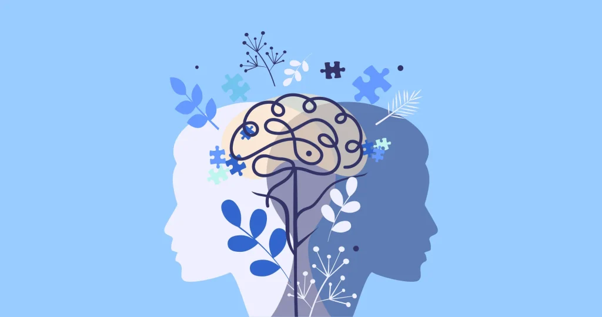
Descripción: En esta semana, la profesora nos dio la bienvenida al curso. Nos explicó en qué consistía la materia, el temario y organizamos las fechas importantes en las que íbamos a trabajar durante todo el curso. Además de eso, hicimos una actividad para conocernos, donde respondíamos preguntas como: ¿por qué decidimos estudiar docencia?, ¿qué esperábamos del curso? y también hablamos un poco de nosotros, nuestros gustos y quiénes somos.
Desde el principio me entusiasmó mucho el curso. Inconscientemente, siempre me ha gustado la psicología, más allá de algo académico, también por el propio cuidado personal. Desde muy joven estuve expuesta a situaciones que siempre quise entender, pero por falta de madurez y experiencia siempre me costó. Sin embargo, de un tiempo para acá, gracias a la facilidad de encontrar libros, ver videos y las redes sociales que brindan más información sobre la salud mental, me di cuenta del gusto que le tomé a tratar de mejorar para mí misma. Aprendizaje clave: La psicología no solo sirve para entender a los demás, también para entenderme a mí misma y crecer como persona y como futura docente.
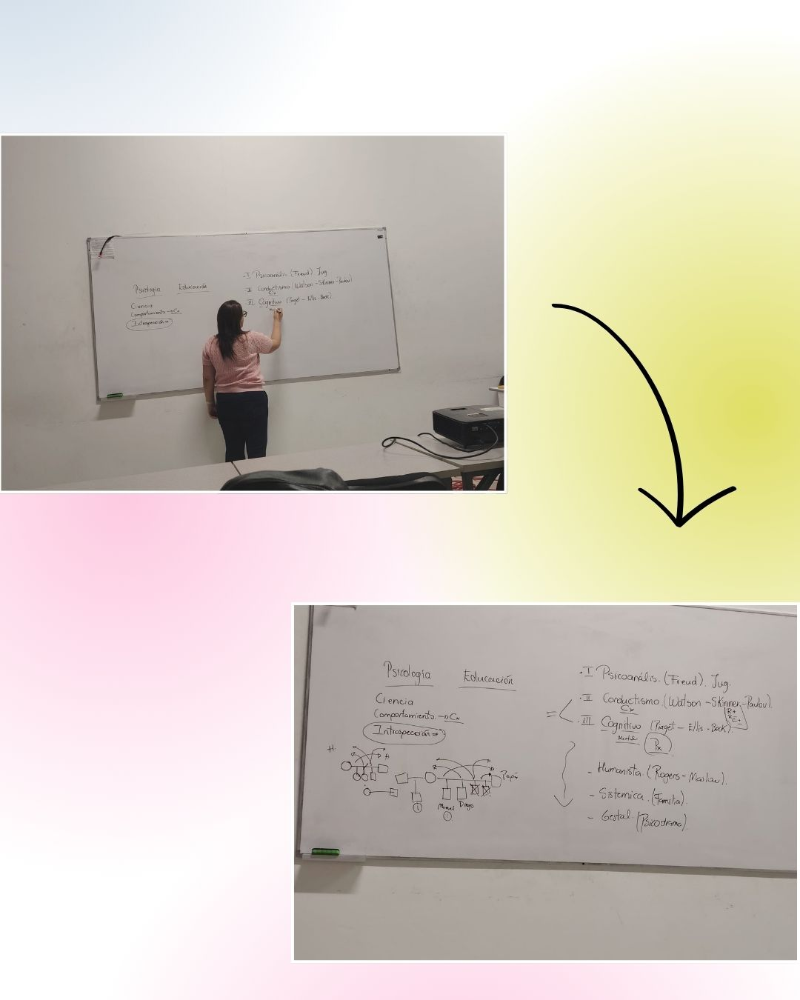
Descripción: Esta semana entramos en el fascinante mundo de la psicología. Comenzamos entendiendo qué es la psicología como ciencia, hablamos de la introspección como herramienta para mirarnos hacia adentro, y analizamos el comportamiento humano desde distintas perspectivas. Conocimos las tres grandes escuelas: el psicoanálisis de Freud, que nos invita a explorar el inconsciente; el conductismo de Watson, Skinner y Pavlov, centrado en la conducta observable y el estímulo-respuesta; y el cognitivismo de Piaget, Ellis y Berk, que pone el foco en los procesos mentales como la percepción, memoria y pensamiento. Finalmente, diferenciamos entre psicología educativa (cómo se aplica la psicología al contexto escolar) y psicopedagogía (enfocada en las dificultades del aprendizaje y la intervención).
Esta semana descubrí que la psicología tiene herramientas. Freud me ayudó a entender que tal vez muchas de mis reacciones vienen de cosas que ni siquiera recuerdo. El conductismo me explicó por qué a veces repito patrones sin pensarlos. Y el cognitivismo me dio esperanza, si puedo cambiar mis pensamientos, puedo cambiar cómo me siento y actúo. También me emocionó entender la diferencia entre psicología educativa y psicopedagogía. Ahora sé que mi camino como docente no es solo enseñar contenido, sino también entender las emociones, los comportamientos y los pensamientos de mis estudiantes. Aprendizaje clave: La psicología me está enseñando a entenderme a mí misma para poder entender mejor a los demás, especialmente a mis futuros estudiantes.
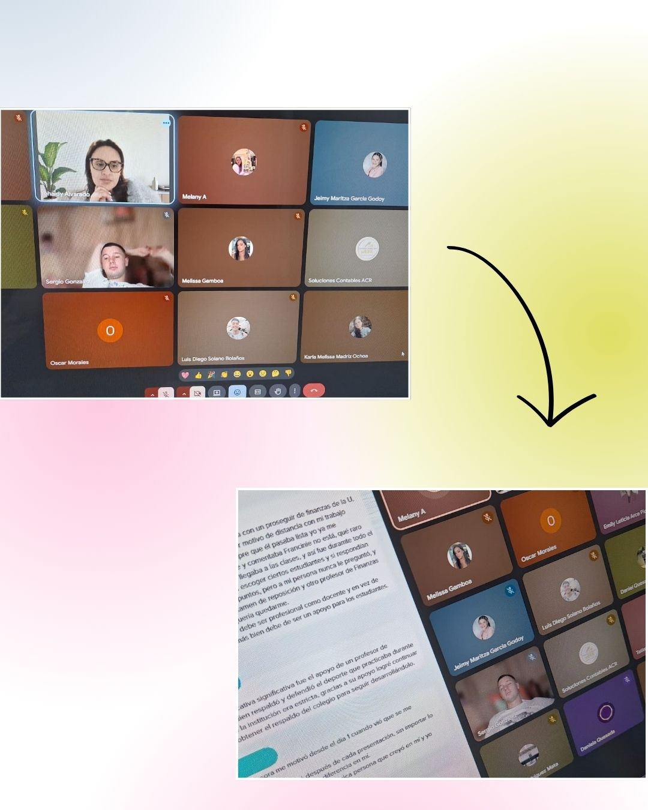
Descripción: Trabajamos las teorías del desarrollo desde diferentes enfoques: psicodinámico (Freud, Erikson), cognitivo (Piaget, Vygotsky), conductual (Watson, Skinner), aprendizaje social (Bandura), apego (Bowlby), desarrollo moral (Kohlberg) y perspectiva ecológica (Bronfenbrenner). Nos detuvimos especialmente en comparar las etapas de Freud (oral, anal, fálica, latencia, genital) con las de Piaget (sensoriomotora, preoperacional, operaciones concretas, operaciones formales).
Esta clase fue virual. En esta clase entendí que cada una responde a una pregunta distinta: ¿cómo se forma la personalidad? (Freud), ¿cómo aprendemos a pensar? (Piaget), ¿cómo influye la cultura? (Vygotsky), ¿cómo nos afectan nuestros primeros vínculos? (Bowlby). Lo que más me gustó de Piaget es que sus etapas me sirven como una "guía" para saber qué tipo de actividades puedo diseñar según la edad de mis estudiantes. Por ejemplo, con niños en etapa preoperacional (2-7 años) se necesita usar juegos simbólicos y ejemplos concretos. Con adolescentes en operaciones formales, se puede plantear problemas abstractos y debates. De Freud se valora que se recuerde que los niños también tienen una vida emocional compleja, aunque a veces como docentes solo nos fijamos en lo académico. Aprendizaje clave: Conocer las etapas del desarrollo no es solo memorizarlas, es usarlas como herramienta para entender a cada estudiante en su momento justo y acompañarlo de la mejor manera posible.
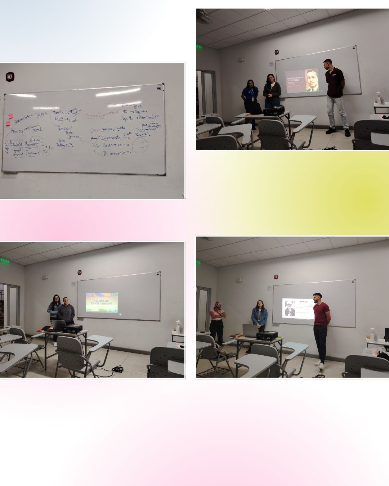
Descripción: Además de trabajar psicosis, neurosis y el psicoanálisis de Freud (Ello, Yo, Superyó; consciente, preconsciente, inconsciente) y la exposición de Piaget por parte de compañeros, tuvimos una presentación dedicada a Lev Vygotsky y su impacto en la psicología educativa. Los conceptos principales fueron: Zona de Desarrollo Próximo (ZDP) (la distancia entre lo que el estudiante hace solo y lo que puede hacer con ayuda), andamiaje (el apoyo temporal que el docente ofrece), y la internalización (cómo el aprendizaje social se vuelve individual). También se explicó que para Vygotsky, el aprendizaje primero es social (interpsicológico) y luego individual (intrapsicológico).
De todo lo que vimos esta semana, lo que más me impactó fue Vygotsky. Me hizo darme cuenta de que durante mucho tiempo pensé que aprender era algo que hacíamos solos, leyendo o estudiando. Pero Vygotsky me mostró que aprendemos con otros: conversando, preguntando, equivocándonos, ayudándonos. La Zona de Desarrollo Próximo me parece una herramienta súper práctica para el aula. Ahora entiendo que no debo pedirle a un estudiante que haga algo que está muy lejos de su nivel, pero tampoco debo darle cosas que ya hace fácilmente. Mi trabajo es encontrar ese punto intermedio donde con un poco de ayuda puede lograrlo. Eso se llama andamiaje: dar apoyo justo, ni demasiado ni muy poco, e ir retirándolo a medida que el estudiante gana confianza. También me gusta mucho que Vygotsky valore la cultura y el contexto, porque no es lo mismo enseñar en una escuela rural que en una urbana, y eso como docente debo tenerlo en cuenta. Aprendizaje clave: El mejor aprendizaje ocurre en comunidad. Mi aula debe ser un espacio donde los estudiantes se ayuden entre sí, donde se permitan equivocarse y donde yo, como docente, sea una guía que construye puentes, no una dueña de la verdad.
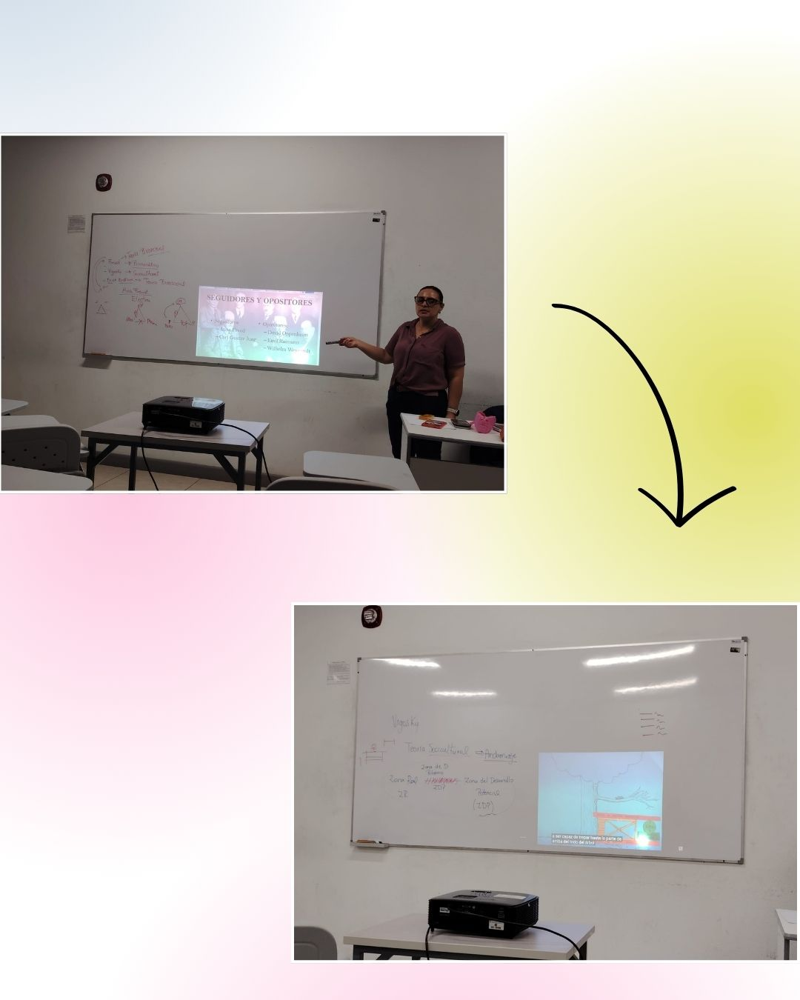
Descripción: Reforzamos el andamiaje y la teoría sociocultural de Vygotsky. Conocimos seguidores y opositores de Freud: Anna Freud, Carl Jung, David Oppenheim, Emil Raiman y Wilhelm Wey. Repasamos la teoría psicosexual y psicoanalítica de Freud, la teoría sociocultural de Vygotsky, la teoría psicosocial de Erikson, y los complejos de Edipo y Electra.
Lo que más valoro de esta clase es haber entendido que no hay una sola verdad en psicología. Freud, Vygotsky y Erikson ven al ser humano desde ángulos distintos y todos aportan algo valioso. Vygotsky me enseña que aprendemos con otros y en contexto; Erikson me da una visión positiva del desarrollo a lo largo de la vida; y Freud, aunque controvertido, me recuerda que los niños también tienen una vida emocional profunda. Los seguidores y opositores me muestran que la ciencia avanza cuando hay debate. Aprendizaje clave: Una buena docente no repite teorías, las integra, las cuestiona y las adapta a su realidad.
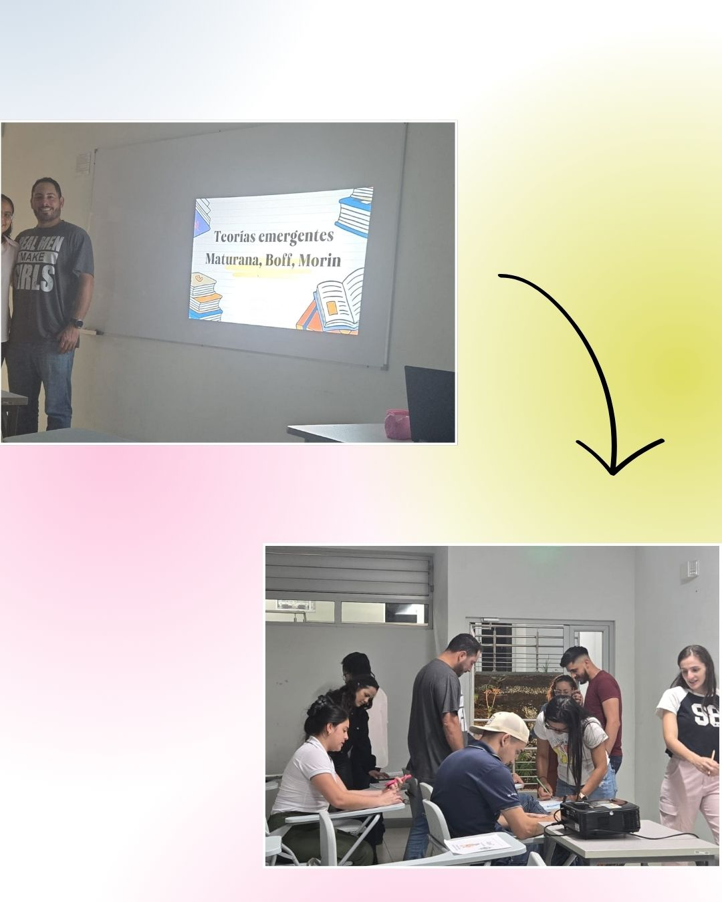
Descripción: Esta semana comenzamos con una actividad muy dinámica sobre las 8 etapas de la teoría psicosocial de Erik Erikson. Cada etapa representa una crisis o conflicto que el ser humano debe resolver a lo largo de su vida: confianza vs desconfianza (0-1 año), autonomía vs vergüenza (1-3 años), iniciativa vs culpa (3-6 años), laboriosidad vs inferioridad (6-12 años), identidad vs confusión de roles (12-20 años), intimidad vs aislamiento (20-40 años), generatividad vs estancamiento (40-60 años) e integridad vs desesperación (60 años en adelante). Todos los compañeros compartimos experiencias personales relacionadas con cada etapa, contando cómo hemos vivido esos conflictos en nuestra propia vida. Fue una actividad muy emotiva y enriquecedora.
Además, con mi grupo conformado por Diego y Daniel, realizamos una exposición sobre tres autores importantes: Humberto Maturana (biólogo chileno que habla de la biología del amor, la autopoiesis y el lenguaje como constitutivo del ser humano), Leonardo Boff (teólogo y filósofo brasileño que trabaja los temas de cuidado, ecología y espiritualidad) y Edgar Morin (sociólogo y filósofo francés que propone el pensamiento complejo y la transdisciplinariedad). Explicamos en qué se basa la teoría de cada uno y cómo sus aportes pueden aplicarse a la educación y a la comprensión del ser humano.
Esta semana fue de las más significativas para mí. La actividad de Erikson me tocó profundamente porque no solo aprendí las etapas teóricamente, sino que las sentí al compartir con mis compañeros sus historias de vida. Escuchar cómo cada uno ha vivido la confianza o desconfianza desde bebé, la búsqueda de identidad en la adolescencia, o las reflexiones sobre la intimidad y el aislamiento, me hizo darme cuenta de que la psicología no es solo teoría, es vida real. Me di cuenta de que como futura docente, voy a tener estudiantes en diferentes etapas del desarrollo, y entender sus crisis psicosociales me ayudará a acompañarlos mejor, no solo académicamente sino también emocionalmente.
Por otro lado, exponer con Diego y Daniel sobre Maturana, Boff y Morin fue un gran desafío porque son autores complejos, pero me fascinaron. De Maturana me llevo que el amor es biológico, que el lenguaje nos hace humanos y que todo conocimiento es una construcción conjunta. De Boff aprendí que el cuidado es el centro de la existencia humana, y que no podemos separarnos de la naturaleza ni de la espiritualidad. De Morin entendí que el pensamiento complejo nos invita a ver la realidad como un todo interconectado, no en partes separadas. Los tres me hicieron pensar que la educación no puede seguir siendo fragmentada y fría; necesitamos una educación que ame, cuide y conecte.
Aprendizaje clave: La teoría cobra vida cuando la conectamos con nuestra propia historia. Erikson me enseñó que cada etapa tiene un conflicto por resolver; Maturana, Boff y Morin me enseñaron que educar es un acto de amor, cuidado y pensamiento complejo. Quiero ser una docente que acompañe a sus estudiantes en sus crisis, que los mire como seres completos y que construya aprendizaje desde el amor y la conexión humana.
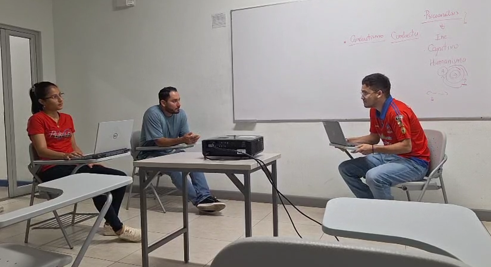
Descripción: Vimos el conductismo (Watson, Skinner, Pavlov), el concepto de conducta, condicionamiento clásico y operante. Además, realizamos sociodramas representando las 8 etapas psicosociales de Erikson.
El conductismo me dio herramientas prácticas para manejar la conducta en el aula con refuerzos positivos. Los sociodramas fueron lo más divertido y emotivo de la semana: actuar las etapas de Erikson me ayudó a entenderlas y sentirlas en carne propia. Aprendizaje clave: La teoría se comprende mejor cuando se actúa y se vive, no solo cuando se lee.
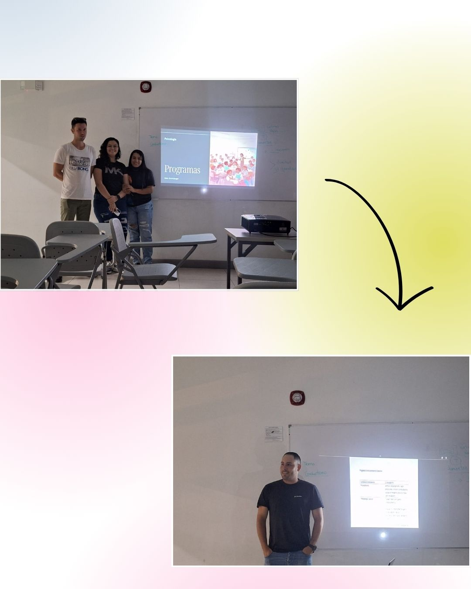
Descripción: Vimos el modelo de Felder (estilos de aprendizaje: sensitivo/intuitivo, visual/verbal, inductivo/deductivo, secuencial/global, activo/reflexivo), el condicionamiento clásico de Pavlov (asociación de estímulos) y el condicionamiento operante de Skinner (refuerzos y castigos).
Me identifiqué mucho con Felder: soy visual y activa. Ahora entiendo por qué algunas clases se me hacían difíciles o fáciles. Como docente, voy a variar mis estrategias. Sobre el conductismo, entendí que los refuerzos positivos son más efectivos que los castigos, y que debo crear un ambiente positivo para que los estudiantes asocien el aprendizaje con cosas buenas. Aprendizaje clave: Conocer los estilos de aprendizaje y los condicionamientos me ayuda a ser una docente más inclusiva, efectiva y empática.
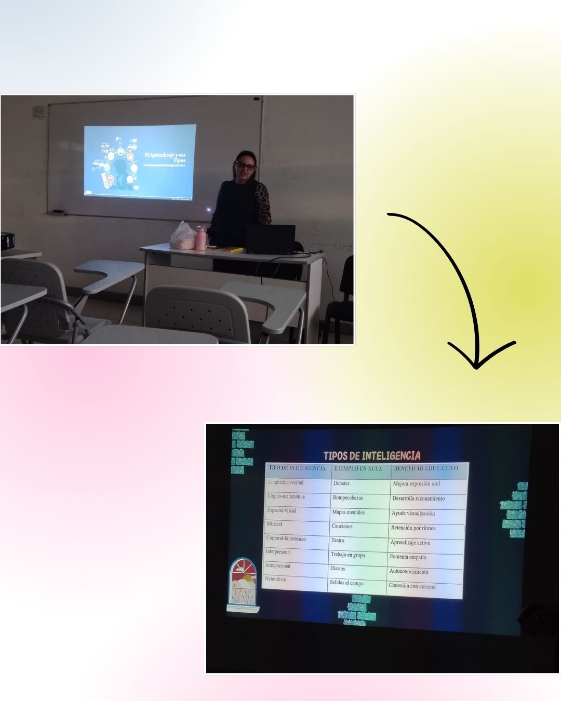
Descripción: Vimos los tipos de aprendizaje (receptivo, por descubrimiento, repetitivo, significativo, colaborativo, experiencial) y la teoría de las inteligencias múltiples de Gardner (lingüística, lógico-matemática, espacial, musical, corporal, interpersonal, intrapersonal, naturalista).
Gardner me hizo entender que todos somos inteligentes, solo que en diferentes cosas. Yo me identifico con la lingÜistico -Verbal y Espacial-visual. Como docente, quiero tener presente estas inteligencias para que mis estudiantes tambien aprendan a explorar sus propias maneras de aprender. También quiero usar aprendizaje significativo y colaborativo, no solo memorización. Aprendizaje clave: Cada estudiante tiene inteligencias únicas, y mi labor es potenciarlas.
Descripción: Aprendimos que la espiritualidad es la conexión con algo más grande, la búsqueda de sentido y propósito. No es lo mismo que religión. Vimos a Frankl (sentido de la vida), Maslow (autorrealización trascendente), Wilber (psicología integral) y Boff (cuidado y espiritualidad ecológica).
Nunca había pensado en la espiritualidad como algo importante para la educación, pero ahora entiendo que sí. Los estudiantes necesitan encontrar sentido a lo que aprenden. Como docente, quiero crear espacios de reflexión, silencio y conexión, y ayudar a mis estudiantes a desarrollar valores como la gratitud y la compasión. Aprendizaje clave: La educación no puede ignorar la dimensión espiritual del ser humano.
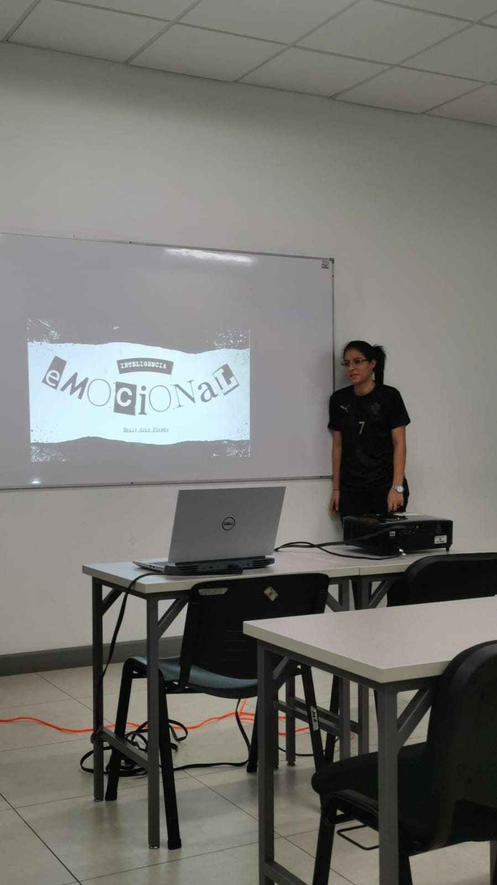
Descripción: Expuse sobre la Inteligencia Emocional. Expliqué el modelo de Mayer y Salovey (percepción, facilitación, comprensión y regulación emocional) y el modelo de Goleman (autoconocimiento, autorregulación, automotivación, empatía y habilidades sociales). También hablé de su importancia en la educación.
Me apasiona este tema porque se conecta con mi historia personal. Entendí la diferencia entre Mayer/Salovey (teórico) y Goleman (práctico). La empatía y la autorregulación me parecen fundamentales para ser buena docente. Aprendizaje clave: La inteligencia emocional se puede enseñar y aprender, y es tan importante como cualquier materia académica.
Descripción: Vimos los apoyos educativos (personales, materiales, organizativos y curriculares), adecuaciones curriculares no significativas y significativas, personalización de la enseñanza, agrupaciones flexibles, ambiente de clase, organización de espacios y talleres.
Esta semana me dio herramientas concretas para atender la diversidad en el aula. Entendí que los apoyos no son un favor, sino un derecho. Me gustó la clasificación en personales, materiales, organizativos y curriculares. También aprendí que el ambiente de clase y la organización del espacio son fundamentales. Aprendizaje clave: La educación inclusiva se logra con apoyos planificados, no con buenas intenciones.
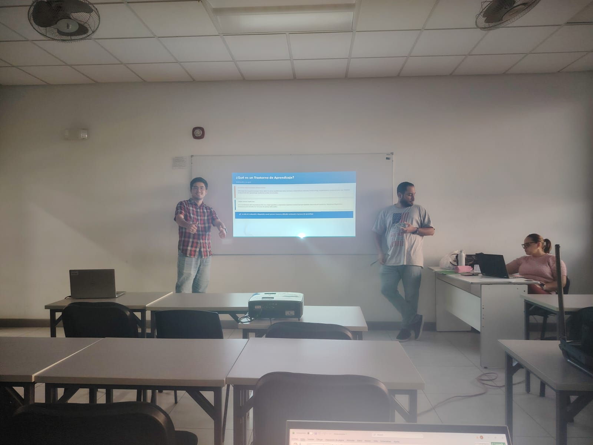
Descripción: Vimos los trastornos específicos del aprendizaje: dislexia (lectura), disgrafía (escritura), discalculia (matemáticas), trastorno de aprendizaje no verbal (TANV). También el TDAH (inatención, hiperactividad, impulsividad) y el TEA (comunicación social, intereses restringidos, rigidez).
Este tema me pareció fundamental. Antes tenía ideas equivocadas sobre estos trastornos. Ahora sé que son reales y tienen base neurobiológica. Como docente, quiero detectar señales tempranas, usar apoyos adecuados y crear un aula inclusiva donde ningún estudiante sea etiquetado como "flojo" o "problemático". Aprendizaje clave: Conocer los trastornos del aprendizaje me permite ser una docente más empática, preparada y efectiva.
Psicoanálisis, Ello, Yo, Superyó
Sociocultural, ZDP, Andamiaje
Desarrollo cognitivo por etapas
8 etapas psicosociales
Condicionamiento clásico
Condicionamiento operante
Conductismo
Inteligencias múltiples
Inteligencia emocional
Modelo de 4 habilidades
Estilos de aprendizaje
Logoterapia, sentido de vida
Pirámide de necesidades
Biología del amor, autopoiesis
Cuidado, ecología, espiritualidad
Pensamiento complejo
Aprendizaje social, autoeficacia
Teoría del apego
Inconsciente colectivo, arquetipos
Psicoanálisis infantil
Teoría ecológica
Desarrollo moral
Aprendizaje significativo
Dislexia, Disgrafía, Discalculia, TANV
Inatención, hiperactividad, impulsividad
Autismo, espectro, neurodiversidad
Personales, materiales, organizativos, curriculares
Sentido, propósito, conexión
Empecé el curso con muchas expectativas. Conocía la psicología de forma superficial, solo lo que había visto en redes sociales y libros por mi cuenta. Aprendí que la psicología es una ciencia que estudia la conducta y los procesos mentales. Conocí las tres grandes corrientes: psicoanálisis (Freud), conductismo (Watson, Skinner, Pavlov) y cognitivismo (Piaget). También diferencié entre psicología educativa y psicopedagogía.
Aquí todo cambió. Entendí las etapas del desarrollo de Freud (psicosexual) y Piaget (cognitivo), y me di cuenta de que no son contradictorias, sino complementarias. Pero lo que más me impactó fue Vygotsky con su Zona de Desarrollo Próximo y el andamiaje. Aprendí que el aprendizaje ocurre primero con otros (social) y luego solo (individual). También trabajamos psicosis, neurosis y las tres instancias de Freud: Ello, Yo y Superyó. ¡Empecé a ver aplicaciones prácticas en situaciones educativas reales!
Conocimos a Erik Erikson y sus 8 etapas psicosociales. ¡Compartir experiencias personales con mis compañeros fue muy emotivo! También aprendí sobre los seguidores y opositores de Freud: Anna Freud, Carl Jung, Oppenheim, Raiman y Wey. Además, con mi grupo expusimos sobre Maturana (biología del amor), Boff (cuidado y ecología) y Morin (pensamiento complejo). Entendí que educar es un acto de amor, cuidado y conexión.
Reforcé el condicionamiento clásico (Pavlov) y el condicionamiento operante (Skinner). Aprendí que los refuerzos positivos son más efectivos que los castigos. Hicimos sociodramas representando las etapas de Erikson, ¡fue divertidísimo! También vimos el modelo de Felder sobre estilos de aprendizaje: sensitivo/intuitivo, visual/verbal, inductivo/deductivo, secuencial/global y activo/reflexivo. Me identifiqué como visual y activa. Ahora entiendo por qué algunas clases se me hacían difíciles.
Howard Gardner me hizo entender que todos somos inteligentes, solo que en diferentes cosas: lingüística, lógico-matemática, espacial, musical, corporal, interpersonal, intrapersonal y naturalista. Yo me identifico con la inteligencia lingüístico-verbal y espacial-visual. Como docente, quiero potenciar todas las inteligencias de mis estudiantes, no solo las académicas tradicionales.
¡Expuse sobre Inteligencia Emocional! Expliqué el modelo de Mayer y Salovey (percepción, facilitación, comprensión y regulación emocional) y el modelo de Goleman (autoconocimiento, autorregulación, automotivación, empatía y habilidades sociales). También vimos espiritualidad con Frankl (sentido de vida), Maslow (autorrealización trascendente) y Boff (cuidado). Aprendí que los estudiantes necesitan encontrar sentido a lo que aprenden.
Aprendí sobre los apoyos educativos: personales, materiales, organizativos y curriculares. Entendí que los apoyos no son un favor, sino un derecho. También trabajamos los trastornos del aprendizaje: dislexia, disgrafía, discalculia, TANV, TDAH y TEA. Ahora sé detectar señales tempranas y usar estrategias inclusivas en el aula. ¡Me siento preparada para atender la diversidad!
He pasado de ser una receptora pasiva de información a una constructora activa de conocimiento. Hoy puedo:
🎓 Meta alcanzada: 95% de comprensión y aplicación
Al principio del curso, pensaba que la Psicología Educativa era solo "teoría bonita" sin aplicación real. Me equivoqué. Aprendí que estas teorías son herramientas poderosas cuando se saben usar. Cada semana fue un descubrimiento: desde Freud y su inconsciente, hasta Vygotsky y su Zona de Desarrollo Próximo, pasando por las 8 etapas de Erikson, los estilos de aprendizaje de Felder, las inteligencias múltiples de Gardner, la inteligencia emocional de Goleman, y finalmente los apoyos educativos y los trastornos del aprendizaje.
Mis fortalezas: Me di cuenta de que soy una persona visual y activa (según Felder), con fortalezas en la inteligencia lingüístico-verbal y espacial-visual (según Gardner). Mi capacidad de análisis y conexión teoría-práctica ha mejorado enormemente. También descubrí que tengo una sensibilidad especial para entender las emociones de los demás, lo que se relaciona con la inteligencia emocional y la empatía.
Áreas de mejora: Necesito profundizar en la evaluación de intervenciones educativas y en la aplicación de apoyos curriculares significativos. También quiero aprender más sobre cómo detectar tempranamente los trastornos del aprendizaje en el aula.
Un aprendizaje que me llevo: La educación no es transmitir información, es crear condiciones para que otros aprendan a aprender. Como dijo Maturana, educar es un acto de amor. Como dijo Boff, educar es cuidar. Como dijo Morin, educar es conectar. Y como yo aprendí, educar es incluir, emocionar y dar sentido.
Si tuviera que repetir el curso, me gustaría:
Después de 13 semanas, me comprometo a:
Mi frase final: No quiero ser una docente que solo enseña contenidos. Quiero ser una docente que acompaña, emociona, incluye y transforma. Este curso me dio las herramientas. Ahora, me toca a mí ponerlas en práctica. 💪🧠✨